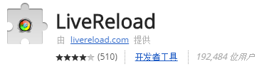
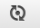
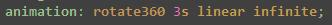
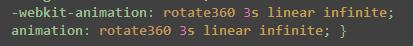
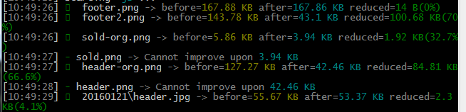
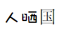
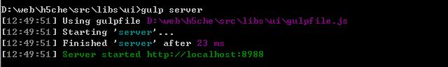

以下关于插件的说明以及配置等仅供参考。
- Javascript打包工具使用的是webpack方式
- CSS自动添加浏览器前缀使用了PostCSS插件中的“autoprefixer”
- CSS中大部分的单位是rem，响应式开发。
- 将px自动转换为rem，使用了一个PostCSS中的另外一个插件“postcss-px2rem”。
可以将需要在gulpfile中引用的参数，放到这里，包括一些路径、打包方式、rem计算基值、版本控制等。例如：
var path = require('path');
module.exports = {
//宏定义
macro: {
'__VERSION': Date.now().toString(16)
},
//CSS相关设置
css: {
rem: 64 //rem计算基值
},
//server相关设置
server: {
release: '../../../dist/2016/'+path.basename(__dirname)+'/', //发布目录
port: 8002 //端口
},
//HTML相关
html: {
collapseWhitespace: true
},
//webpack打包
webpack: {
entry: {
index : './js/index.js'
},
output: {
filename: '[name].bundle.js',
}
}
};
这个是gulp自带的，就是当你的文件改动了后，就做相应的task。在配置文件中可以引入“gulp-watch”。
监控sass中的文件变化，一有变化就做sass的编译。“*”与“”这种语法可以参考《Gulp：任务自动管理工具》
gulp.task('watch', function() {
livereload.listen();
gulp.watch('sass/**/*.scss', ['sass']);
gulp.watch('./build/css/**/*.css', ['css']);
gulp.watch('js/**/*.js', ['js']);
gulp.watch('**.html', ['html']);
});
livereload是用来监控页面修改，然后自动刷新页面修改部分，引用插件“gulp-livereload”。
firefox或chrome要分别安装插件才可运行，chrom插件如下：

安装完后会在浏览器中出现个小按钮。

注意是黑色的时候才是在执行中，还有就是要在相应的task中加相应的代码“pipe(livereload())”。
gulp.task('css', ['sass'], function () {
return gulp.src('./build/css/**/*.css')
.pipe(gulp.dest(dist+'css/'))
.pipe(livereload());
});
通过sass编写css，能更模块化，多人协作比较方便。先安装“gulp-sass”。
1）“.on(‘error’, sass.logError))”的作用是在编译错误的时候显示错误信息，但是不能中断编译。
2）“postcss”就是PostCSS插件，执行px转rem的操作和自动添加CSS浏览器前缀。
3）要执行这两个功能，需要引入“gulp-postcss”、 “postcss-px2rem”、 “autoprefixer”
4）插件“autoprefixer”不仅仅是自动加“-webkit”、“-moz”等的前缀，还能自动添加兼容代码，例如flex弹性布局的不同写法。
书写下图内容：

输出的内容如下：

gulp.task('sass', function () {
var processors = [px2rem({remUnit: config.css.rem}), autoprefixer()];
return gulp.src('./sass/*.scss')
.pipe(sass().on('error', sass.logError))
.pipe(postcss(processors))
.pipe(gulp.dest('./build/css/')).pipe(livereload());
});
编译sass与将css压缩到发布目录，分别放在了两个task中。
cssnano就是在做CSS压缩，需要引入“gulp-cssnano”。
gulp.task('css', ['sass'], function () {
return gulp.src('./build/css/**/*.css')
.pipe(cssnano())
.pipe(gulp.dest(dist+'css/'))
.pipe(livereload());
});
模块化合并使用“webpack”， 需要引入插件“webpack-stream”， github上面还有篇说明教程。
引用到了config.webpack中的配置参数。
webpack: {
entry: {
index: './js/index.js'
},
output: {
filename: '[name].bundle.js',
}
}
gulp.task('webpack', function () {
return gulp.src('./js/*.js')
.pipe(webpackStream(config.webpack))
.pipe(gulp.dest('./build/js/')).pipe(livereload());
});
脚本的合并与压缩是在两个task中实现的。压缩引用了插件“gulp-uglify”。
gulp.task('js', ['webpack'], function () {
return gulp.src('./build/js/*.js')
.pipe(plumber())
.pipe(uglify())
.pipe(gulp.dest(dist+'js/')).pipe(livereload());
});
通过插件“gulp-image”压缩的图片，有时候能牙70%以上，非常给力。
gulp.task('image', function () {
return gulp.src('./img/**')
.pipe(image())
.pipe(gulp.dest(dist+'img/'));
});

1）将HTML文件压缩，可以缩小很多，有很多参数可以选择，比如去除空格（collapseWhitespace）等， 引入插件“gulp-htmlmin”
2）给HTML中的JS文件、CSS文件等添加时间戳，可以防止更新后，还在被缓存。
gulp.task('html', function () {
//生成时间戳
var stream = gulp.src('./*.html');
for (var key in config.macro) {
if (config.macro.hasOwnProperty(key)) {
stream = stream.pipe(replace(key, config.macro[key]));
}
}
return stream.pipe(htmlmin({collapseWhitespace: config.html.collapseWhitespace})).pipe(gulp.dest(dist)).pipe(livereload());
});
网上有很多webfont，例如国外的Font Awesome， 国内的iconfont。都能做出漂亮的自定义字体。
与西文字体不同，由于字符集过大，中文字体无法享受 webfont 带来的便利，为了让中文字体也这么便利，我们需要对其进行min。 引入插件“gulp-fontmin”。
gulp.task('font', function() {
gulp.src('font/*.+(eot|svg|ttf|woff)')
.pipe(fontmin({
text: '人晒'
}))
.pipe(gulp.dest('dist/font'));
});
配置的两个字“人晒”与没配置的“国”，明显有区别。

有些操作需要一个服务器环境才能执行，例如ajax，所以需要配置一个。
引用插件“gulp-connect”，就可以实现本地的Server。
port参数可以在Config文件中定义。
gulp.task('server', function () {
connect.server({
root: dist,
port: config.server.port
});
});
